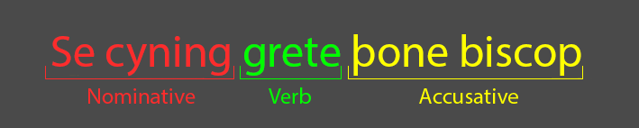
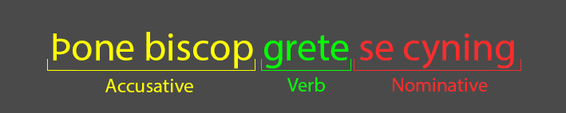
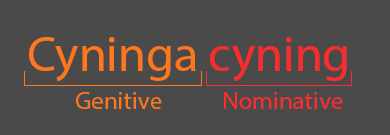
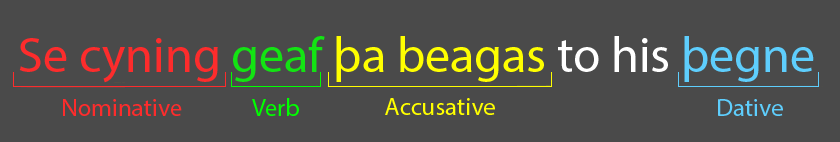
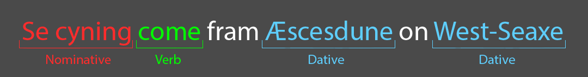

Cases and Strong Masculine Nouns Overview
To recap what we have covered in the previous topics, Old English is an inflected language and so uses a case system similar to that of modern Icelandic, Russian or German. This means the ending of nouns, adjectives and demonstratives change to indicate the grammatical function of the word. For example, whether it is the subject, the direct object, indirect object, or a possessive. English began to lose its inflection after the arrival of French speaking Normans in 1066. Modern English is not generally considered an inflected language.
There are four main Old English cases: the nominative, accusative, genitive and dative.
Nominative and Accusative
The
nominative is used for the
subject of a sentence. A subject is the person, place, thing, or idea that is doing or being something.
The
accusative is used for a
direct object, that is the person or thing which is the direct recipient of the verb. A verb which
is directly acting on an object is known as a
transitive verb.

In Old English, nouns in the nominative and accusative cases are often declined in the same way. The best way of telling the singular nominative and accusative nouns apart — if it isn’t clear from context — is by using checking for a demonstrative: se for the nominative and þone for the accusative. For example, examine the below sentence. Though the word order does not match the word order of the above sentence, and there are no identifiable endings, you can see which is the subject and the direct object through examining the demonstratives.

The plural versions of the nominative and accusative are always the same, both in how they decline and in the demonstratives they use.
| Nominative and Accusative Strong Masculine Nouns | ||||
| Singular | Plural | Singular Suffix | Plural Suffix | |
|---|---|---|---|---|
| Nominative | Se cyning | þa cyningas | - | -as |
| Accusative | þone cyning | þa cyningas | - | -as |
Genitive
The
genitive is the case of possession and can be used both subjectively —
the king’s thane — and objectively —
fear of the Lord.

An easy way to tell if something should be in the genitive is to see if you can place ‘of’ in the sentence — king of king's; one of the thanes; the children of the king; a child of five years.

| Nominative and Accusative Strong Masculine Nouns | ||||
| Singular | Plural | Singular Suffix | Plural Suffix | |
|---|---|---|---|---|
| Genitive | þæs cyninges | þara cyninga | -es | -a |
Dative
The
dative is the case of the
indirect object. This is a noun which is not the direct recipient of an action but is still affected
by the verb.

In the above sentence, the rings are what is being directly acted upon, as they are what is being given. However, they are being given to the thane. So he is still being acted upon by the verb, but indirectly. As a result, beag is in the accusative and þegen is in the dative.
An easy way to figure out if something is in the dative is to check for the distinctive um ending, the demonstrative þæm, or to check for a preposition such as ‘to’ or ‘fram’.

| Nominative and Accusative Strong Masculine Nouns | ||||
| Singular | Plural | Singular Suffix | Plural Suffix | |
|---|---|---|---|---|
| Dative | þæm cyninge | þæm cyningum | -e | -um |
It is important to understand how cases work, and to be able to identify which case a word is in, so as to understand the meaning of a sentence. While Old English often follows the subject verb object format of modern English, there can often be exceptions, especially in poetry.
The differing word order does not affect meaning, but word order can be used to affect emphasis. That being said, in Old English the subject does generally come first, or at least very early in the sentence, the same way it does in modern English.
There are some common differences in word order which should be watched out for. For example, possessives often come after the noun it modifies, especially in direct address:
Old English:
Fæder ure þu þe eart on heofonum
Direct trans:
Father ours you who are in heaven
Modern Eng:
Our Father who art in heaven
Always remember that Old English has case harmony, so even if a word comes slightly earlier or later in a sentence than you might expect, it can generally be paired to the correct noun by comparing the case endings.
| Strong Masculine Noun | ||||
| Singular | Plural | Singular Suffix | Plural Suffix | |
|---|---|---|---|---|
| Nominative | Se cyning | þa cyningas | - | -as |
| Accusative | þone cyning | þa cyningas | - | -as |
| Genitive | þæs cyninges | þara cyninga | -es | -a |
| Dative | þæm cyninge | þæm cyningum | -e | -um |
| Strong Masculine Noun | ||||
| Singular | Plural | Singular Suffix | Plural Suffix | |
|---|---|---|---|---|
| Nominative | Se biscop | þa biscopas | - | -as |
| Accusative | þone biscop | þa biscopas | - | -as |
| Genitive | þæs biscopes | þara biscopa | -es | -a |
| Dative | þæm biscope | þæm biscopum | -e | -um |
| Strong Masculine Noun | ||||
| Singular | Plural | Singular Suffix | Plural Suffix | |
|---|---|---|---|---|
| Nominative | Se þegen | þa þegnas | - | -as |
| Accusative | þone þegen | þa þegnas | - | -as |
| Genitive | þæs þegnes | þara þegna | -es | -a |
| Dative | þæm þegne | þæm þegnum | -e | -um |
| Strong Masculine Nouns | ||||
| Singular | Plural | Singular Suffix | Plural Suffix | |
|---|---|---|---|---|
| Nominative | Se stan | þa stanas | - | -as |
| Accusative | þone stan | þa stanas | - | -as |
| Genitive | þæs stanes | þara stana | -es | -a |
| Dative | þæm stane | þæm stanum | -e | -um |
Test Yourself!
In the textboxes below, fill out the fully declined version of the word in brackets.